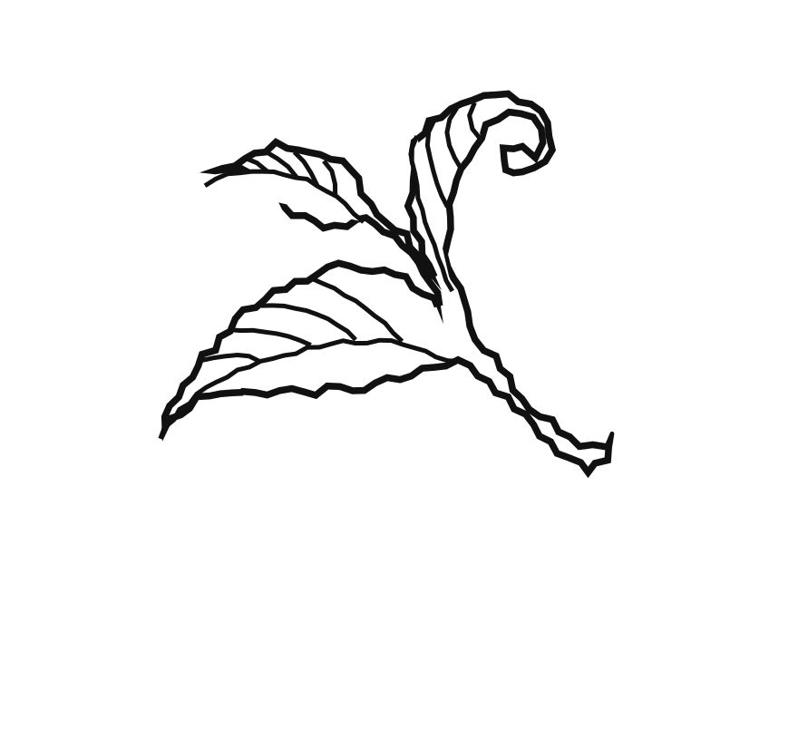

Aа
ПРИНИМАТЬ СТРОГО
ПО НАЗНАЧЕНИЮ!
ПРИНИМАТЬ СТРОГО
ПО НАЗНАЧЕНИЮ!
Наборная
антиква имеет
два начертания,
поддерживает
до 72 языков
Горьковатый и колкий
на первый взгляд,
он вскоре удивляет
сложным букетом
ощущений и оставляет
приятный осадок
belladonna
potion
Яд!!!
YES
NO
необратимый 100% эффект!
Состав: вода, слеза василиска, корень солодки,
тающий камень, секретный ингредиент

ẅ ǻ ż μ ő ğ ÿ ţ ŀ ã ĉ
ђ ƒ ǿ ŋ ã ℓ ї ř ѓ
ұ ț ð ƶ þ π
Контрастный
Изящный
Яркий
Его тёмный цвет, сжатые, пружинистые формы, чёткие
пропорции и приятные формы букв выглядят безопасно,
пока не натолкнёшься на укороченные засечки,
которые придают странице неожиданно резкий вид
1. Etis
2. Atis
3. Animatis
Форма строчной «а» Wermut — определённо
художественный манифест, занимающий уникальное
место в современном типоргафическом арсенале
1
2
3
4
5
6
7
8
Гарнитура позволяет использовать
цифры для верхнего и нижнего индексов,
а так же минускульные
π
Назначение: для обретения
типографской утончённости,
чёткости изложения
унций горьких засечек
капли
отрицательного кернинга
мл эссенции
диакритики
гр измельчённого
цветка контрастности
Варить до готовности
при температуре
В течение
дней
Идеальная формула

Принимать
в чистом виде!
Наколдовала:
Даша Потехина
Б25Д309
2025